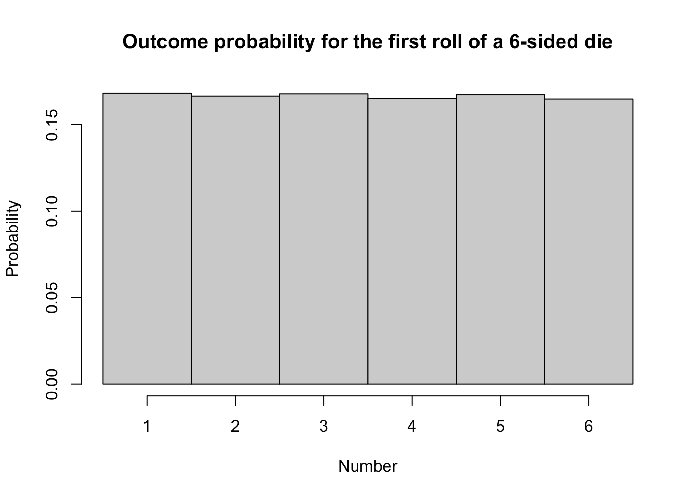
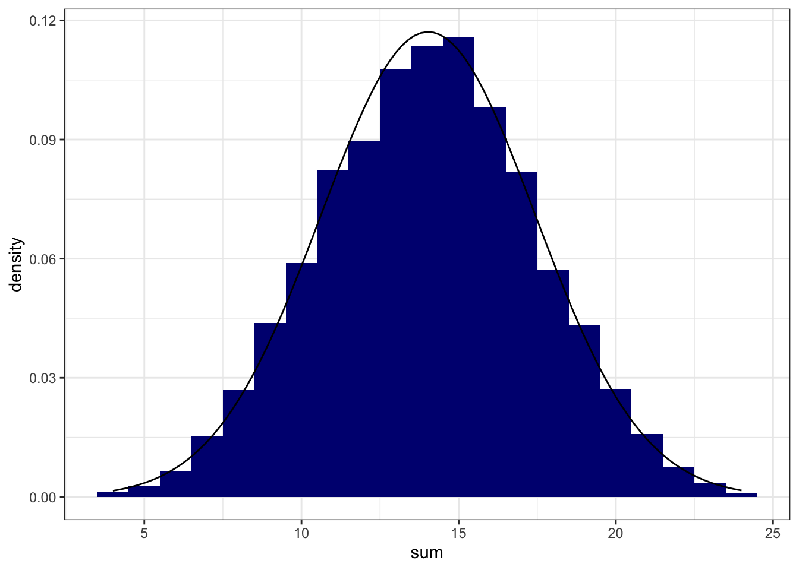
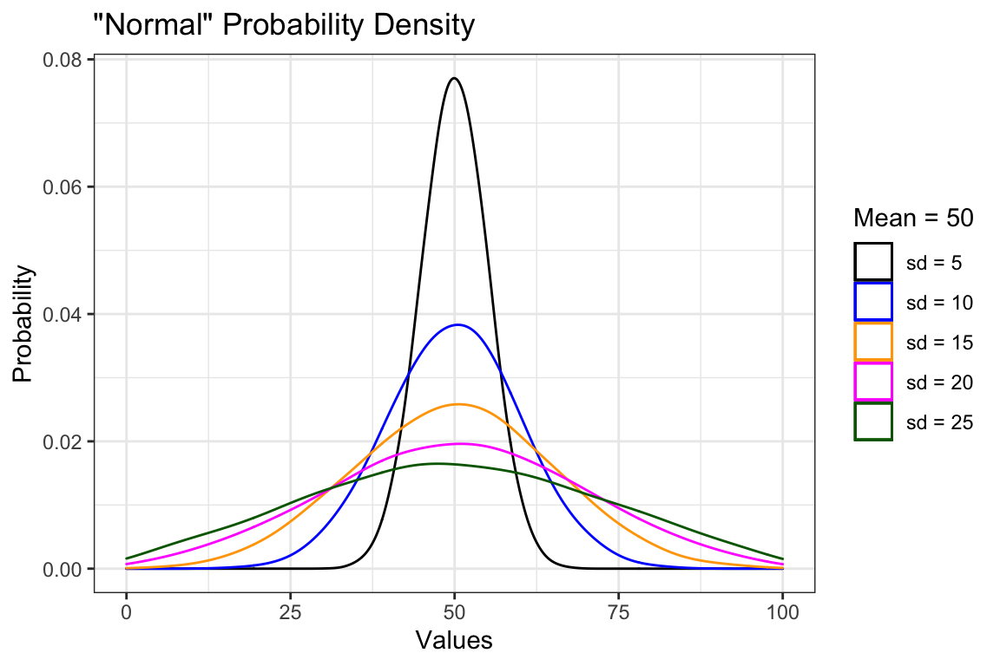
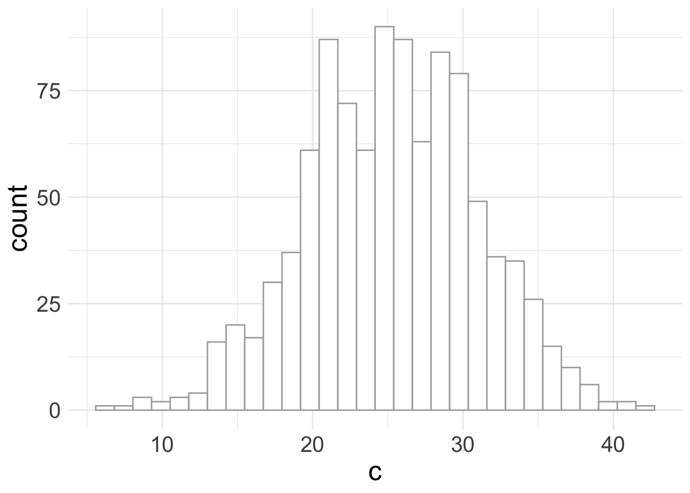
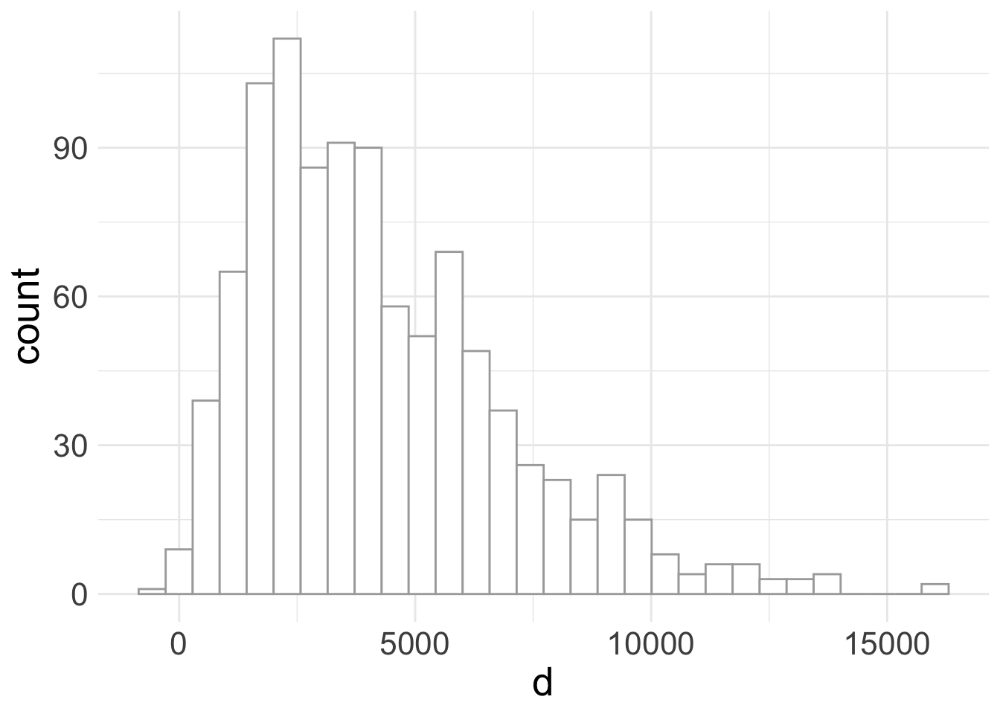
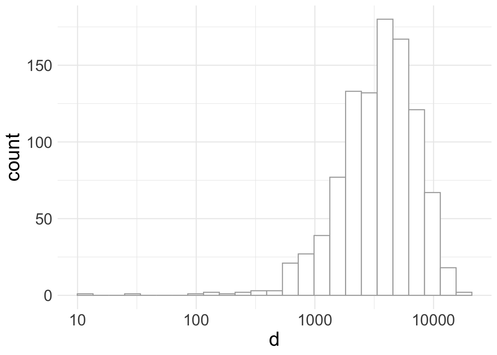

Chapter 12 Appendix: Reference Distributions
In this chapter I discuss a handful of reference distributions that you may encounter while working thorugh this course. I don’t go into great detail on any of these distributions (or their mathematical structure) because smarter, better, and more authoritative descriptions can be found elsehwere in reference texts or online. This is the $1 tour.
12.1 Uniform Distribution
The uniform distribution describes a situation where all obervations have an equal probability of occurrence. Examples of uniform distributions include: the outcome of a single roll of a 6-sided die, or the flip of a coin, or the chance of picking a spade, heart, diamond, or club from a well-shuffled deck of cards. In each of these cases, all potential outcomes have an equal chance of occuring. A uniform distribition may be specified simply by setting the range of possible outcomes (i.e., a minimum, maximum, and anything in between). The “in-between” part also lets you specify whether you want to allow outcome values that are continuous (like from a random-number generator), integers (like from a dice roll), or some other format (like a binary 0 or 1; heads or tails).
Below, we create a probability density function for the first roll of a six-sided die; this is a discrete uniform distribition since we only allow integers to occur. A uniform distribution is appropriate here because any of the numbers between 1 and 6 has equal probability of being rolled. Notice the shape of the histogram…flat.
#create a uniform distribition for the first roll of a 6-sided die
six_sided <- ceiling(runif(10e4, min=0, max=6))
#create a histogram of the probability density for a uniform distribution
hist(six_sided,
breaks = c(0.5, 1.5, 2.5, 3.5, 4.5, 5.5, 6.5),
freq = FALSE,
xlab = "Number",
ylab = "Probability",
main = "Outcome probability for the first roll of a 6-sided die")
12.1.1 Characteristic Plots: Uniform Distribution
12.2 Normal Distribution
The normal distribution arises from phenomena that tend to have additive variability. By “additive”, I mean that the outcome (or variable of interest) tends to vary in a +/- fashion from one obervation to the next. Lots of things have additive variability: the heights of 1st graders, the size of pollen grains from a tree or plant, the variation in blood pressure across the population, or the average temperature in Fort Collins, CO for the month of June.
Let’s examine what additive variability looks like using the 6-sided dice mentioned above. Although a dice roll has a uniform distribution of possible outcomes (rolling a 1,2,3,4,5, or 6), the variability associated with adding up the sum of three or more dice creates a normal distribition of outcomes. If we were to roll four, 6-sided dice and sum the result (getting a value between 4 and 24 for each roll), and then repeat this experiment 10,000 times, we see the distribution shown below. The smooth line represents a fit using a normal distribution - a pretty nice fit considering that we are working with a discrete (integer-based) dataset! 
12.2.1 Normal Distribution: Characteristic Plots
Unlike the uniform distribution, the normal distribution is not specified by a range (it doesn’t have one). The normal distribution is specified by a central tendancy (a most-common value) and a measure of data’s dispersion or spread (a standard deviation). A normal distribution is symmetric, meaning that the spread of the data is equal on each side of the central tendency. This symmetry also means that the mode (the most common value), the median (the 50th percentile or 0.5 quantile) and the mean (the average value) are all equal. A series of normal distributions of varying dispersion is shown in the panels below.

12.3 Log-normal Distribution
Multiplicative variation is what gives rise to a “log-normal” distribution: a special type of skewed data.
Let’s create two normal distributions for variables ‘a’ and ‘b’:
#create two variables that are normally distributed
normal_data <- tibble(a = rnorm(n=1000, mean = 15, sd = 5),
b = rnorm(n=1000, mean = 10, sd = 3))Individually, we know that these data are normally distributed (because we created them that way), but what does the distribution look like if we add these two variables together?
#add those variables together and you get a normal distribution
normal_data %>% mutate(c = a + b) -> normal_data
ggplot2::ggplot(data = normal_data) +
geom_histogram(aes(c),
bins = 30,
fill = "white",
color = "darkgrey") +
theme_minimal() +
theme(text = element_text(size=20))
## Saving 7 x 5 in imageAnswer: still normal. Since all we did here was add together two normal distributions, we simply created a third (normal) distribution with more additive variability.
What happens, however, if we multiply together a series of normally distributed variables?
#multiply together three normal variables
normal_data %>%
mutate(d = sample(a*b*c, 1000)) -> log_data
ggplot2::ggplot(data = log_data) +
geom_histogram(aes(d),
bins = 30,
fill = "white",
color = "darkgrey") +
theme_minimal() +
theme(text = element_text(size=20))
## Saving 7 x 5 in image#plot the same data on a log scale (x axis)
ggplot2::ggplot(data = log_data) +
geom_histogram(aes(d),
bins = 25,
fill = "white",
color = "darkgrey") +
theme_minimal() +
scale_x_log10() +
theme(text = element_text(size=20))
## Saving 7 x 5 in image